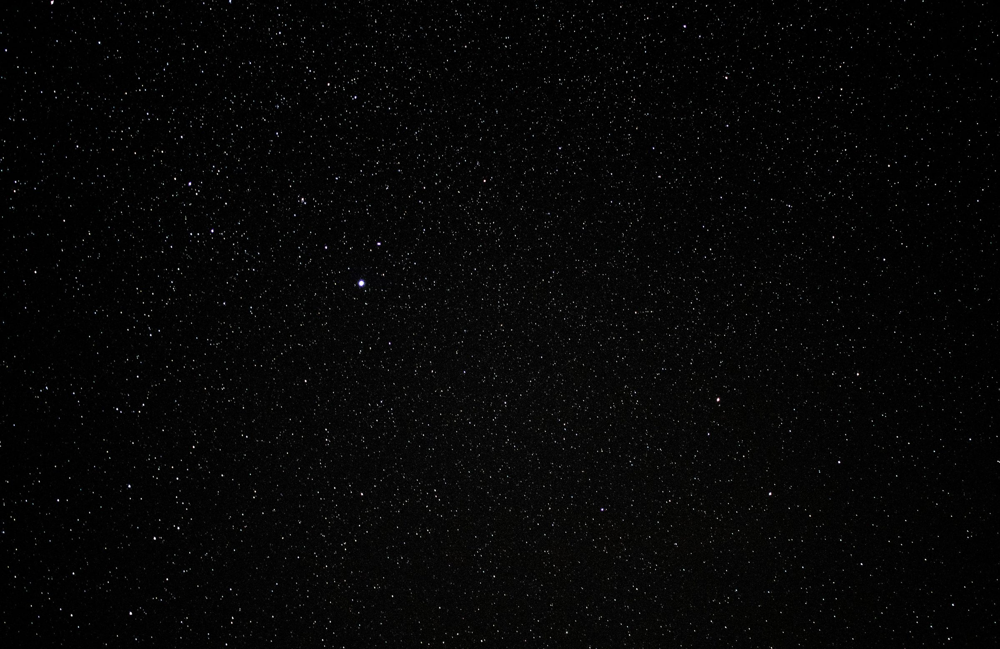

About this journey
Read the story behind Our Astro Journey and see how beginner astrophotography is evolving from phone shots to deeper projects.
Learn more
This is the place to check when new pages, guides, or tools go live. Each card gives a quick outline of what has been added and links straight to it.
This site now uses dedicated pages for each topic so you can jump directly to the content you want without scrolling through a single long page.
Read the story behind Our Astro Journey and see how beginner astrophotography is evolving from phone shots to deeper projects.
Learn moreRead our new beginner-friendly guide for the 12 August 2026 eclipse, including safe filter advice, UK viewing tips, and simple household experiments.
Open eclipse guideCheck the weather page for forecasting tips, location planning, and the tools we use for observing nights.
Open weather pageFind dark sky site information and learn where to look for the best observing conditions across the UK.
Open dark skiesRead our DWARF Mini smart telescope review and follow upcoming beginner-focused equipment coverage.
Read reviewsCompare current offers and beginner resources before choosing your first telescope or astrophotography setup.
View discounts and linksBrand new to astronomy? Follow a clear first-step route for your first session, first target, and first useful result.
Open Start HereFollow a staged plan from first-night setup to consistent observing and early image-processing progress.
View learning pathUse a practical checklist to reduce setup mistakes and complete your first sessions with confidence.
Open checklistOur archive is growing, so the best way to browse everything is through dedicated gallery pages for the full collection, moon images, and Hubble-inspired studies.
Browse every image from our learning journey in one place, from moon shots to deep-sky practice.
View the full gallerySee the moon images taken from the front door and explore the progression from phone photography to more careful framing.
See moon imagesOpen the Hubble collection to focus on the deep-sky targets and image-processing practice that are shaping our learning.
Open Hubble gallery